HNSW paper walkthrough: trace a 17-node search and build step by step
Companion note to Abid Saudagar’s video walkthrough, How HNSW Works (Explained from the Original Research Paper), grounded in Malkov and Yashunin’s 2016 HNSW paper.
Suppose your database holds 1,000,000,000 vectors and a user sends a query. In roughly 5 milliseconds, the index returns the 10 closest matches after inspecting only a few hundred vectors out of a billion—and gets the right top-10 almost every time. The algorithm behind that jump in Redis, Postgres (pgvector), Qdrant, Weaviate, Milvus, and Pinecone is HNSW (Hierarchical Navigable Small World).
This note follows Abid Saudagar’s complete visual walkthrough from start to finish: why exact search hits a wall, how recall is defined and why approximate is not wrong, how the four ANN families compare, the 10-million-book library analogy, the two-phase search trace across Layers 2, 1, and 0 (17 nodes A–Q over 7 explicit expansion steps), how node insertion and the paper’s Algorithm 4 diversity heuristic prevent disconnected cluster islands, and how to tune M, efConstruction, and efSearch in production and Redis.
Why not always use exact nearest-neighbor search?
When a user asks a question in a semantic search or RAG system, we embed the query into a vector and look for the $k$ stored vectors with the smallest distance (or largest similarity). The most direct strategy is Exact Nearest Neighbor (brute-force flat search): compute the distance from the query $q \in \mathbb{R}^d$ to every stored vector $x_i$ in the database, sort or heap-select the best $k$, and return them.
Exact search guarantees 100% accuracy, and at small scale it is fast enough that you do not need an index at all:
- 10,000 vectors: effectively instant.
- 100,000 vectors: still fast enough for most applications.
- 1,000,000+ vectors (e.g., 768 dimensions) and beyond: cost grows linearly as $O(Nd)$ with both corpus size $N$ and dimension $d$. An unoptimized scan can take seconds per query (and even the HNSW paper’s SIMD-optimized brute-force baseline takes ~94 ms on 1M 128-dim SIFT vectors, scaling to ~0.5 s at 768 dimensions—still far too slow for a 10M-vector service handling hundreds of concurrent requests per second).

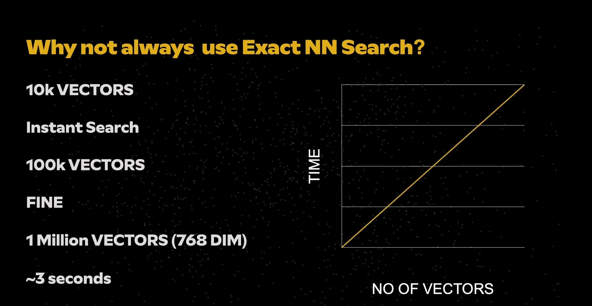
Approximate Nearest Neighbor (ANN) search breaks that linear wall by trading a tiny, measurable slice of accuracy for orders-of-magnitude lower latency.
Recall@k and the four families of ANN
To measure how much accuracy an approximate index gives up, we compare the $k$ items returned by the ANN index, $A_k(q)$, against the true top-$k$ items from exact brute-force search, $T_k(q)$:
If you ask for the top $k=10$ neighbors and 9 of the 10 vectors returned by HNSW match the exact top 10, then $\operatorname{Recall}@10 = 9/10 = 90\%$.
Two practical truths govern recall in vector search:
- “Approximate” does not mean “wrong.” Embeddings are themselves statistical approximations produced by a neural network. Whether a passage sits at exact rank 9 or rank 10 in cosine distance is rarely distinguishable to a human reader, whereas cutting query latency by $100\times$–$1000\times$ is immediately noticeable.
- Rule #1 of vector search: Never ship an ANN index you haven’t measured against exact search on a sample of your own data.
Over the last several decades, researchers have grouped ANN indexes into four primary families:
| Family | Representative indexes | How it avoids checking every vector |
|---|---|---|
| 1. Tree / space-partitioning | KD-Trees, Annoy | Recursively splits the space along hyperplanes and searches only the branches near the query |
| 2. Hashing (LSH) | Random-hyperplane LSH, Multi-probe LSH | Hashes nearby vectors into the same buckets so only colliding buckets are scored |
| 3. Clustering / Inverted File | IVF, IVF-PQ | Groups vectors into Voronoi clusters around centroids and scans only the nearest few clusters |
| 4. Proximity graphs | HNSW, DiskANN | Connects vectors into a navigable graph and walks node-to-node toward the query |
Before diving into HNSW’s internals, use the video’s engineering decision rule to check whether HNSW is even the right family for your workload:

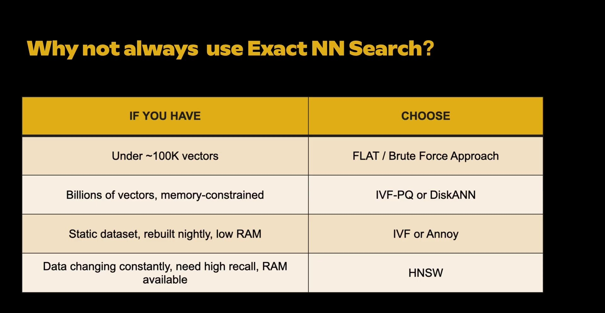
When your corpus exceeds ~100k vectors, receives live insertions and updates, requires high recall at low latency, and fits in RAM, HNSW is the default choice across modern vector databases.
Intuition first: the 10-million-book library
Imagine walking into a library of 10 million books looking for the best book on Graph Neural Networks, but there is no computer catalog. Brute-force search means starting at Aisle 1, Book 1 and reading every single spine until Book 10,000,000—guaranteed to find the exact best book, but taking days.
Instead, a real library gives you a hierarchy of routing signs:
- Building Directory (Lobby): 6 entries → points you to Floor 3: Science. One lookup eliminates 5 floors (millions of books).
- Floor 3 Directory: 20 entries → points you to Aisle 12: Computer Science. Another huge fraction of the library is skipped.
- Shelf Labels in Aisle 12: Databases, Operating Systems, Machine Learning → you walk straight to the Machine Learning shelf.
- Fine-grained scan on the shelf: You inspect the ~40 books on that shelf and pick the closest match on Graph Neural Networks.
Notice the structural insight behind this analogy: the directories are not separate books. They exist purely to route you into the right neighborhood with big coarse jumps first, medium jumps second, and fine-grained comparisons only when you are already close to the target.
What HNSW actually builds: nested layers of the same vectors
HNSW turns that coarse-to-fine routing hierarchy into a multi-layer proximity graph stacked from bottom to top:
- Layer 2 (Top layer — expressways): Contains only a tiny handful of nodes connected by very long edges spanning across the entire space.
- Layer 1 (Middle layer — local roads): Contains more nodes with medium-range edges.
- Layer 0 (Bottom layer — neighborhood streets): Contains every single vector in the database, densely connected to nearby neighbors for fine-grained search.

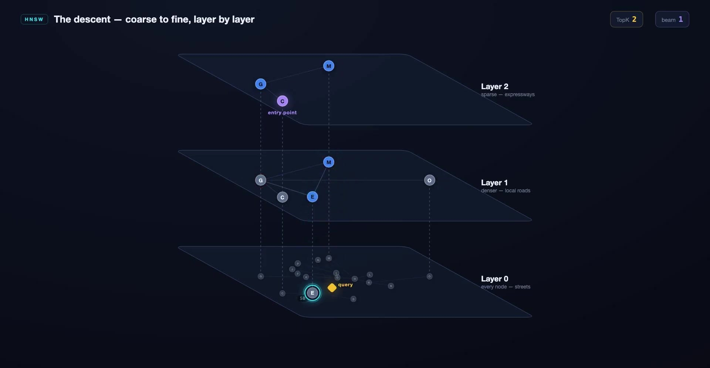
One structural rule is essential to keep straight: upper layers are not centroids or separate summary vectors. Every layer is a strict subset of the layer below it ($V_2 \subset V_1 \subset V_0$). If a node is promoted to Layer 2, that exact same vector ID also exists on Layer 1 and Layer 0—it simply maintains a different neighbor list on each layer.
Phase 1: greedy descent through the upper layers
Every HNSW query executes in two phases:
- Phase 1 (Upper layers, $\ell = L_{\max} \dots 1$): Pure greedy walk (retaining only a single best node, $\mathrm{ef}=1$) to zoom into the query’s neighborhood as fast as possible.
- Phase 2 (Layer 0): Wider multi-candidate beam search ($\mathrm{efSearch} \ge k$) to escape local traps and collect the final top-$k$ neighbors.
What “greedy” means—and why a local minimum traps it
A greedy search makes every step by looking only at its current node’s immediate neighbors and moving to whichever neighbor is closest to the query right now, never planning two steps ahead and never backtracking.
Why is pure greedy search dangerous when you want exact or near-exact neighbors? Picture standing on a hillside in thick fog trying to reach the deepest valley floor (elevation 8 m). You can only see one step around you, so you always step downhill: from elevation 85 m down to a small dip at 45 m. Suddenly, every step around you goes uphill (48 m, 50 m). A greedy walker concludes it has reached the bottom and stops—even though the true valley floor at 8 m sits just 100 meters further across a small ridge. That shallow dip is a local minimum.

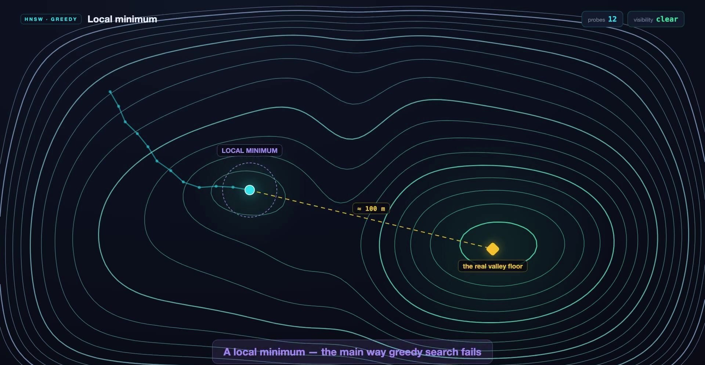
In HNSW’s upper layers, getting approximate neighborhood routing from a greedy walk is totally fine because the upper layers only need to drop us into a good starting point on Layer 0.
Tracing Phase 1 on the walkthrough graph
In our worked example, we want the $\text{top\_k} = 2$ nearest neighbors to query $q$ (drawn as a gold diamond). Every node label carries its precomputed distance to $q$ in parentheses:
- Layer 2 (Entry point
C(70)): Search always starts at the index’s top entry point, nodeCat distance70. We checkC’s Layer 2 neighbors and greedily hop to the closer neighborG(60), then fromG(60)toM(55). FromM(55), no neighbor on Layer 2 has distance $< 55$. Layer 2 is done; we carryM(55)down as our entry point to Layer 1. - Layer 1 (Entry from
M(55)): On Layer 1,M(55)has three neighbors:G(60),O(60), andE(50). OnlyE(50)beats55, so we step toE(50). FromE(50), no Layer 1 neighbor is closer than50. Layer 1 is done; we drop down the vertical pillar toE(50)on Layer 0.

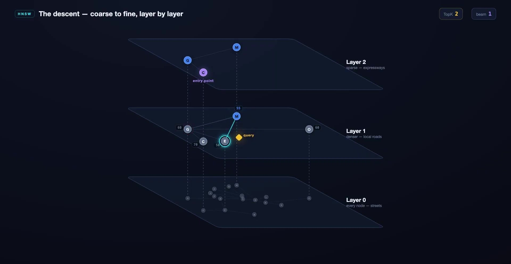
C(70) → G(60) → M(55) on Layer 2, drops to Layer 1, steps M(55) → E(50), and hands E(50) to Layer 0. Frame from Abid Saudagar, 6:06.Throughout Phase 1, the algorithm only ever remembers one node at a time. In just a handful of distance checks, we moved from distance 70 to distance 50.
Phase 2: the 7-step Layer 0 search trace
We now land on Layer 0 at node E(50) with query parameters:
If we continued our single-node greedy walk on Layer 0, one bad hop could trap us in a local minimum. Instead, Layer 0 switches to a beam search controlled by efSearch = 4 using two priority queues:
- Candidate queue $C$ (min-heap, ordered nearest-first): Unvisited leads waiting to have their neighborhoods expanded.
- Result set $W$ (max-heap, capped at size $\mathrm{efSearch}=4$): The best nodes discovered so far. Its worst (largest-distance) member when full is called the bar: $$\text{bar}(W) = \max_{w \in W} d(q, w).$$
Two rules govern every step on Layer 0:
- Stopping check (before expanding the nearest lead $c = \min(C)$): Compare $c$ against the bar in $W$. If $W$ is full and $$d(q, c) > \text{bar}(W),$$ then even our best remaining lead in $C$ is worse than the worst of our 4 best results in $W$. Because $C$ is sorted nearest-first, every other candidate in $C$ is even farther away—so we stop immediately.
- Admission check (for each newly seen neighbor $e$ of $c$): Node $e$ makes the cut if $W$ is not yet full ($|W| < \mathrm{efSearch}$) or if $e$ beats the current bar ($d(q, e) < \text{bar}(W)$). When $e$ enters a full $W$, the worst entry is evicted and the bar tightens.
Implementation note: In Malkov & Yashunin’s Algorithm 2 (SEARCH-LAYER), every neighbor that passes the admission check against $W$’s bar is pushed into both $C$ and $W$. In the video’s visual panels, $W$ is updated as each neighbor is inspected so candidates that do not beat the updated bar are omitted from $C$ as well; both versions visit the exact same sequence of nodes and produce the exact same queues at every step, as we verify in Python below.
Initial state at Layer 0 entry E(50)
Before expanding anything, our starting node E(50) is placed in both queues: $C = [\mathrm{E}(50)]$ and $W = [\mathrm{E}(50)]$ with three empty slots remaining.

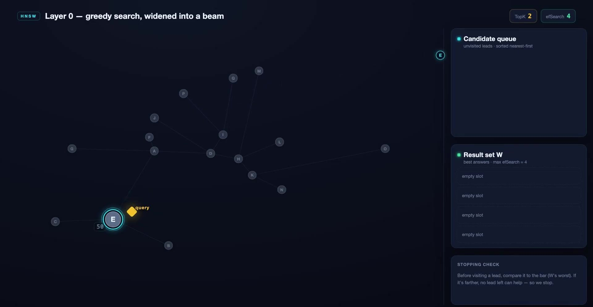
E(50) seeds both the Candidate queue $C$ and Result set $W$ ($\mathrm{efSearch}=4$, $\text{top\_k}=2$). Frame from Abid Saudagar, 7:34.Step 1: Visit E(50) — filling $W$ sets the initial bar at 70
- Pop nearest candidate:
E(50). Since $W$ has empty slots, the stopping check does not fire. - Inspect neighbors of
E(50):A(30),B(45), andC(70). - Update queues: Because $W$ had 3 open slots, all three neighbors are admitted into both $C$ and $W$. $W$ is now full with 4 entries, and its worst entry
C(70)becomes the bar (70). - State after Step 1: $C = [\mathrm{A}(30), \mathrm{B}(45), \mathrm{C}(70)]$, $W = [\mathrm{A}(30), \mathrm{B}(45), \mathrm{E}(50), \mathrm{C}(70)]$ (bar =
70).

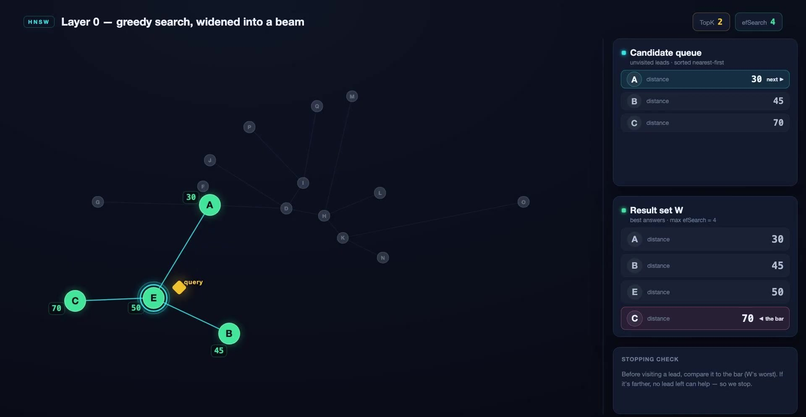
E(50)): neighbors A(30), B(45), and C(70) fill $W$ to capacity ($\mathrm{efSearch}=4$), setting the bar at 70. Frame from Abid Saudagar, 8:15.Step 2: Visit A(30) — the bar tightens from 70 to 45
- Pop nearest candidate:
A(30). Stopping check: is $30 > 70$? No → keep exploring. - Inspect unseen neighbors of
A(30):D(12),F(35), andG(60). - Update queues:
D(12) < 70: enters $C$ and $W$, evictingC(70)from $W$ (bar tightens to50).F(35) < 50: enters $C$ and $W$, evictingE(50)from $W$ (bar tightens to45).G(60) > 45: rejected! It is seen (1 distance calculation), but never added to $C$ or $W$.
- State after Step 2: $C = [\mathrm{D}(12), \mathrm{F}(35), \mathrm{B}(45), \mathrm{C}(70)]$, $W = [\mathrm{D}(12), \mathrm{A}(30), \mathrm{F}(35), \mathrm{B}(45)]$ (bar =
45).

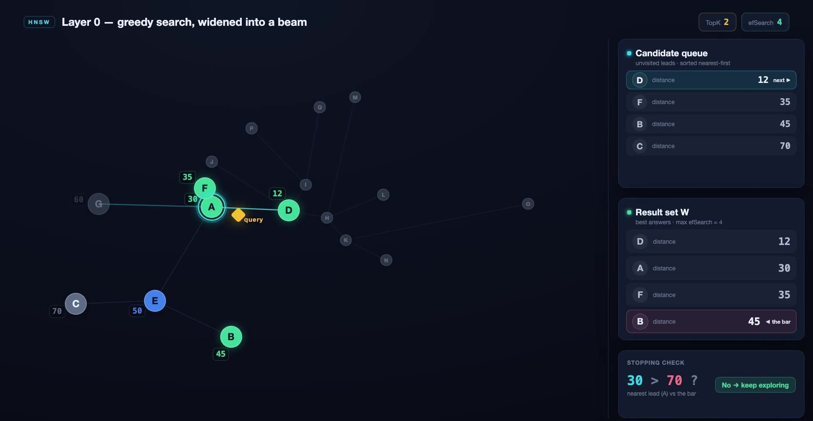
A(30)): D(12) and F(35) beat the bar and evict C(70) and E(50); G(60) fails the bar and is dropped. The bar tightens from 70 to 45. Frame from Abid Saudagar, 8:56.Step 3: Visit D(12) — discovering H(8) and tightening the bar to 30
- Pop nearest candidate:
D(12). Stopping check: is $12 > 45$? No → keep exploring. - Inspect unseen neighbors of
D(12):H(8),I(20), andJ(40). - Update queues:
H(8) < 45: enters $C$ and $W$, evictingB(45)(bar tightens to35).I(20) < 35: enters $C$ and $W$, evictingF(35)(bar tightens to30).J(40) > 30: rejected!
- State after Step 3: $C = [\mathrm{H}(8), \mathrm{I}(20), \mathrm{F}(35), \mathrm{B}(45), \mathrm{C}(70)]$, $W = [\mathrm{H}(8), \mathrm{D}(12), \mathrm{I}(20), \mathrm{A}(30)]$ (bar =
30).

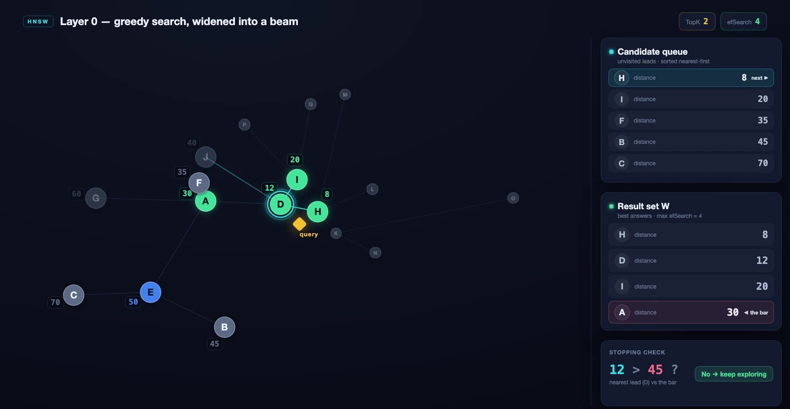
D(12)): H(8) and I(20) enter $W$, evicting B(45) and F(35) and tightening the bar to 30; J(40) is rejected. Frame from Abid Saudagar, 9:20.Step 4: Visit H(8) — discovering K(9) and tightening the bar to 20
- Pop nearest candidate:
H(8). Stopping check: is $8 > 30$? No → keep exploring. - Inspect unseen neighbors of
H(8):K(9),L(25), andM(55). - Update queues:
K(9) < 30: enters $C$ and $W$, evictingA(30)(bar tightens to20).L(25) > 20andM(55) > 20: both fail the new bar of20and are rejected!
- State after Step 4: $C = [\mathrm{K}(9), \mathrm{I}(20), \mathrm{F}(35), \mathrm{B}(45), \mathrm{C}(70)]$, $W = [\mathrm{H}(8), \mathrm{K}(9), \mathrm{D}(12), \mathrm{I}(20)]$ (bar =
20).

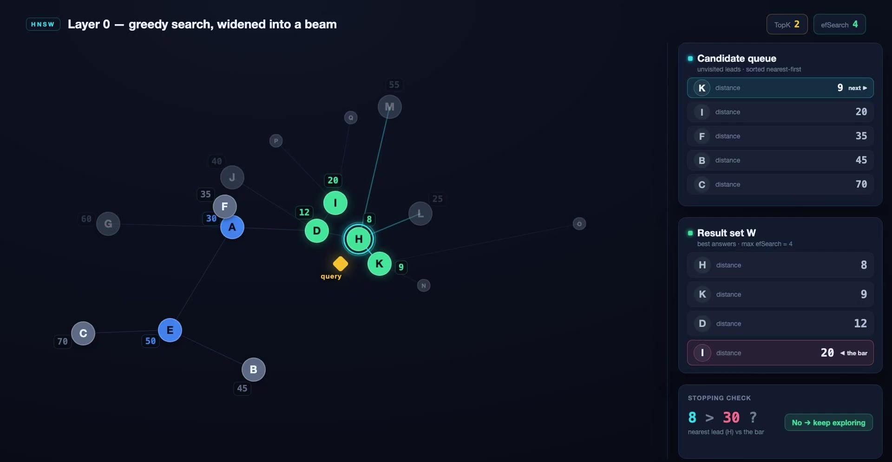
H(8)): K(9) enters $W$ and tightens the bar to 20; L(25) and M(55) are rejected. Frame from Abid Saudagar, 9:40.Steps 5 & 6: Visit K(9) and I(20) — all new neighbors fail the bar of 20
- Step 5 (Pop
K(9)): Is $9 > 20$? No. Inspect unseen neighborsN(22)andO(60). Neither beats20; both are rejected. - Step 6 (Pop
I(20)): Is $20 > 20$? No—the stopping check is strictly greater than ($>$), because a node at distance20could still have a neighbor closer than20. Inspect unseen neighborsP(45)andQ(50). Neither beats20; both are rejected. - State after Step 6: $C = [\mathrm{F}(35), \mathrm{B}(45), \mathrm{C}(70)]$, $W = [\mathrm{H}(8), \mathrm{K}(9), \mathrm{D}(12), \mathrm{I}(20)]$ (bar =
20).

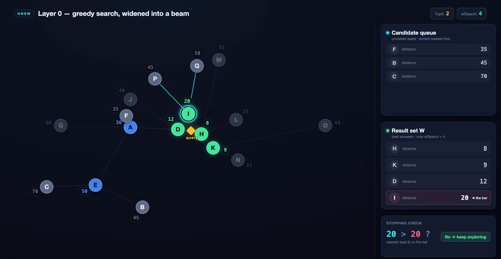
K(9) and I(20)): note that $20 > 20$ is false, so I(20) is expanded, but all newly seen neighbors (N(22), O(60), P(45), Q(50)) fail the bar of 20. Frame from Abid Saudagar, 10:08.Step 7: Pop F(35) — stopping check triggers ($35 > 20$) and returns top-2
- Pop nearest candidate:
F(35). - Stopping check: Is $35 > 20$? Yes → STOP! Because $C$ is a min-heap ordered nearest-first,
F(35)is the closest remaining unvisited lead, and the rest of $C$ (B(45),C(70)) is even farther away. - Final answer: Return the best $\text{top\_k} = 2$ entries from $W = [\mathrm{H}(8), \mathrm{K}(9), \mathrm{D}(12), \mathrm{I}(20)]$, which are
H(8)andK(9).

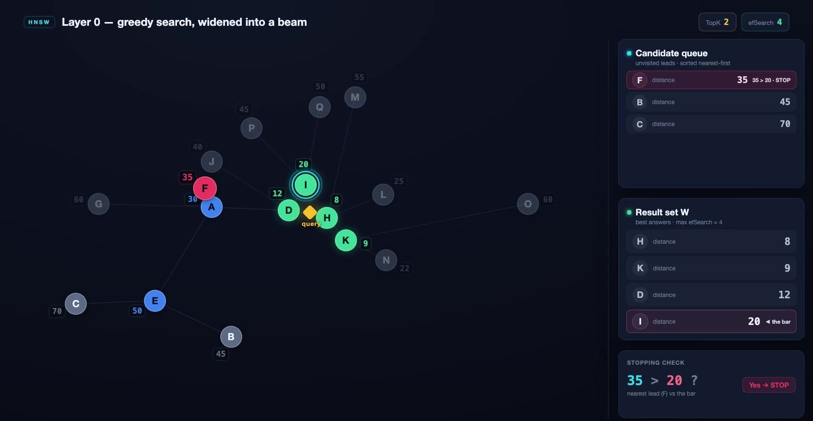
20 = Yes, terminating the search without visiting F, B, or C">F(35)): the stopping check $35 > 20$ fires. The remaining leads in $C$ (F(35), B(45), C(70)) are never expanded. Frame from Abid Saudagar, 10:36.
H(8) and K(9). Frame from Abid Saudagar, 10:43.Complete 7-step Layer 0 state table
Complete Layer 0 trace from entry E(50) with top_k = 2 and efSearch = 4.
| Step | Popped lead | Stop check | Unseen neighbors | Admitted | Candidate queue C | Result set W (max 4) | Bar |
|---|---|---|---|---|---|---|---|
| Init | — | — | E(50) | E(50) | E(50) | E(50) | open |
| 1 | E(50) | open | A(30), B(45), C(70) | A(30), B(45), C(70) | A(30), B(45), C(70) | A(30), B(45), E(50), C(70) | 70 |
| 2 | A(30) | 30 > 70 (No) | D(12), F(35), G(60) | D(12), F(35) | D(12), F(35), B(45), C(70) | D(12), A(30), F(35), B(45) | 45 |
| 3 | D(12) | 12 > 45 (No) | H(8), I(20), J(40) | H(8), I(20) | H(8), I(20), F(35), B(45), C(70) | H(8), D(12), I(20), A(30) | 30 |
| 4 | H(8) | 8 > 30 (No) | K(9), L(25), M(55) | K(9) | K(9), I(20), F(35), B(45), C(70) | H(8), K(9), D(12), I(20) | 20 |
| 5 | K(9) | 9 > 20 (No) | N(22), O(60) | none | I(20), F(35), B(45), C(70) | H(8), K(9), D(12), I(20) | 20 |
| 6 | I(20) | 20 > 20 (No) | P(45), Q(50) | none | F(35), B(45), C(70) | H(8), K(9), D(12), I(20) | 20 |
| 7 | F(35) | 35 > 20 (STOP) | — | — | B(45), C(70) unexpanded | Return H(8), K(9) | 20 |
Scroll horizontally to compare the columns. Keyboard: focus the table, then use the left and right arrow keys.
Four takeaways from the Layer 0 search
Looking back at the 7 steps reveals why HNSW is both fast and accurate:
- $W$’s bar tightened monotonically ($70 \to 45 \to 30 \to 20$): Every time a closer node entered $W$, the bar dropped, making it harder for mediocre leads to enter $C$ and bringing the stopping check closer to firing. That tightening bar is the search converging.
- We popped 7 nodes ($E, A, D, H, K, I$, plus $F$ at stop) and saw 17 distinct nodes on Layer 0 ($A$–$Q$, around 20 across the whole journey): Seeing a node means computing one distance to the query; visiting (expanding) a node means popping it from $C$ and inspecting all its neighbors. Most seen nodes (
G,J,L,M,N,O,P,Q) were rejected immediately at the bar without ever having their neighborhoods expanded. - $W$ never held more than 4 entries ($\mathrm{efSearch}=4$), yet drew from all nodes seen: A small fixed-capacity heap continuously distills the best candidates out of a much larger explored subgraph.
efSearchcontrolled the entire speed-versus-recall trade-off at query time: RaisingefSearchto8would keep the bar looser for longer and explore more leads; loweringefSearchto2would tighten the bar faster and stop earlier. And becauseefSearchis a query-time parameter, you can change it on every single request without touching the index.

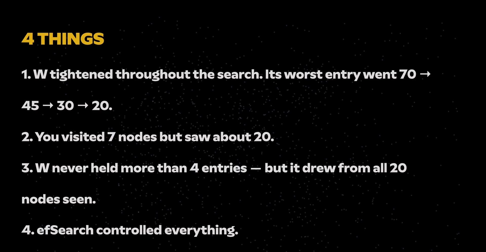
The core HNSW parameters at a glance
Before watching how the graph gets built, lock in the definitions of the parameters that govern HNSW structure and search:
| Parameter | When set | What it controls |
|---|---|---|
| M | Build time | Number of bidirectional links added per newly inserted node on each layer it joins |
| M_max and M_max0 | Build time (derived) | Hard cap on total edges a node can hold: $M_{\max} = M$ on upper layers, and $M_{\max0} = 2M$ on Layer 0 (doubled because Layer 0 contains every vector and performs the fine-grained search) |
| efConstruction | Build time | Size of the result set $W$ during index construction when searching for a new node’s neighbor candidates |
| efSearch (EF_RUNTIME) | Query time | Size of the result set $W$ on Layer 0 during a query ($\mathrm{efSearch} \ge \text{top\_k}$) |
How the HNSW index gets built: inserting node X
You do not build an HNSW graph all at once. It is constructed one node at a time: every newly inserted vector searches the graph that already exists to find its neighbors, then wires itself in. For each new vector X, HNSW makes two decisions:
Decision 1: Which highest layer does X reach?
Each inserted node is assigned a maximum layer $\ell$ by drawing a single uniform random number $u \sim \operatorname{uniform}(0, 1)$ and mapping it through an exponentially decaying formula:
Why this formula works (in one line): By the change-of-base identity, multiplying $-\ln(u)$ by $m_L = 1/\ln M$ simply computes $-\log_M(u)$. Because $u$ is uniform on $(0, 1)$, the condition $\ell \ge j$ is equivalent to $-\log_M(u) \ge j \iff u \le M^{-j}$, which happens with probability $M^{-j}$. In code, this single $\ln(u)$ call is a closed-form shortcut for flipping a biased coin (with heads probability $1/M$) in a loop until the first tail.
Brief worked examples for $M = 16$ ($m_L = 1/\ln 16 \approx 0.3607$):
- Typical roll $u = 0.50$ (lands in $(1/16, 1]$): $-\ln(0.50) \times 0.3607 = 0.693 \times 0.3607 = 0.25 \implies \ell = \lfloor 0.25 \rfloor = \mathbf{0}$ (stays on Layer 0).
- Uncommon roll $u = 0.02$ (lands in $(1/256, 1/16]$): $-\ln(0.02) \times 0.3607 = 3.912 \times 0.3607 = 1.41 \implies \ell = \lfloor 1.41 \rfloor = \mathbf{1}$ (promoted to Layer 1 & Layer 0).
- Rare roll $u = 0.001$ (lands in $(1/4096, 1/256]$): $-\ln(0.001) \times 0.3607 = 6.908 \times 0.3607 = 2.49 \implies \ell = \lfloor 2.49 \rfloor = \mathbf{2}$ (promoted to Layers 2, 1, & 0).
Consequently, with a typical $M = 16$ (for $N = 1{,}000{,}000$ vectors):
- Layer 0 only ($\ell = 0$, when $u > 1/16 = 0.0625$): $1 - 1/16 = \mathbf{93.75\%}$ stop at Layer 0 (while $100\%$ of all $1\text{M}$ vectors exist on Layer 0).
- Layer 1 or higher ($\ell \ge 1$, when $u \le 1/16$): Only $16^{-1} = 1/16$ ($\mathbf{6.25\%}$, $\approx 62{,}500$ nodes) reach Layer 1+.
- Layer 2 or higher ($\ell \ge 2$, when $u \le 1/256$): Only $16^{-2} = 1/256$ ($\mathbf{\approx 0.39\%}$, $\approx 3{,}906$ nodes) reach Layer 2+.
- Layer 3 or higher ($\ell \ge 3$, when $u \le 1/4096$): Only $16^{-3} = 1/4096$ ($\mathbf{\approx 0.024\%}$, $\approx 244$ nodes) reach Layer 3+.
That single random draw automatically thins each upper layer by $16\times$ without running any clustering algorithm.
Decision 2: How does X find its neighbors?
Suppose our new vector X happens to sit at the exact same coordinates as our earlier query $q$, and the random layer roll assigns X to Layer 0 with build parameters M = 2 and efConstruction = 4:
- Because
Xbelongs only to Layer 0, it descends through Layer 2 (C(70) → G(60) → M(55)) and Layer 1 (M(55) → E(50)) using a fast greedy walk ($\mathrm{ef}=1$), making no connections on upper layers. - Landing at
E(50)on Layer 0, it runs the exact same beam search we just traced, usingefConstruction = 4as the size of $W$. - Because
Xis at the same position as $q$ andefConstruction = 4matches our earlierefSearch = 4, the Layer 0 search produces the exact same 4-node shortlist: $$W = [\mathrm{H}(8), \mathrm{K}(9), \mathrm{D}(12), \mathrm{I}(20)].$$
(If X had rolled Layer 1 instead, it would have greedily descended only Layer 2, then searched and wired neighbors on Layer 1 using efConstruction, and then searched and wired neighbors on Layer 0 using efConstruction.)

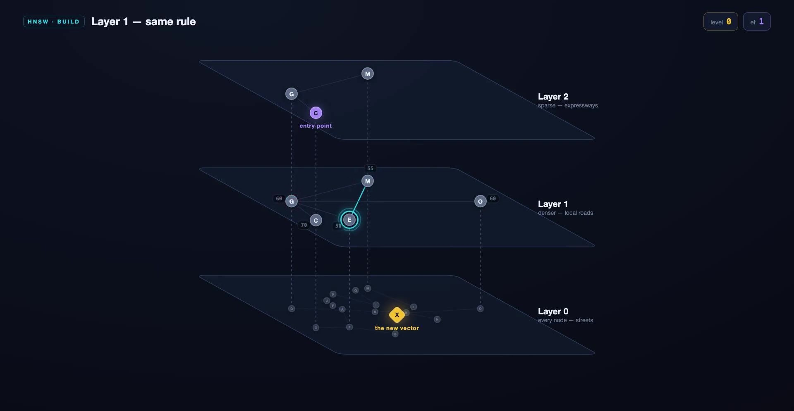
X (at the same position as query $q$, assigned to Layer 0): X descends Layers 2 and 1 greedily to reach entry E(50) on Layer 0. Frame from Abid Saudagar, 13:45.
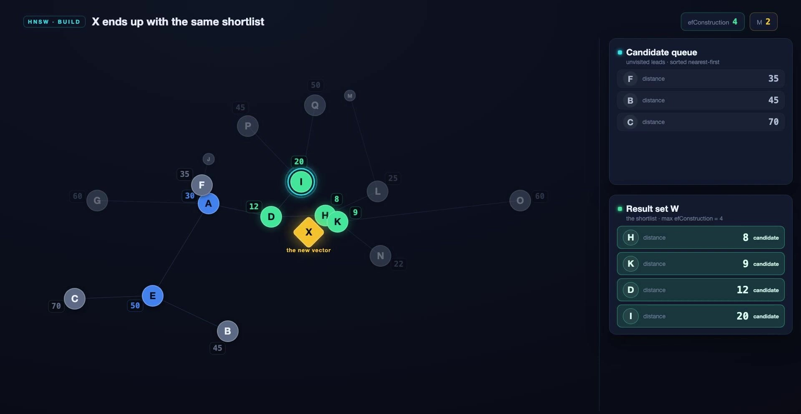
efConstruction = 4 produces the candidate shortlist $W = [\mathrm{H}(8), \mathrm{K}(9), \mathrm{D}(12), \mathrm{I}(20)]$ from which X must choose $M = 2$ neighbors. Frame from Abid Saudagar, 14:20.Choosing neighbors: why “pick the $M$ nearest” is a trap
Node X has budget M = 2 and candidate shortlist $W = [\mathrm{H}(8), \mathrm{K}(9), \mathrm{D}(12), \mathrm{I}(20)]$. The naive rule is to wire X to the two closest nodes, H(8) and K(9). Look at the geometry to see why that wastes an edge: H(8) and K(9) sit right next to each other in the exact same direction from X, with distance $d(\mathrm{H}, \mathrm{K}) = 4$. Both edges would point into the same tiny pocket, leaving X with zero links toward the upper-left neighborhood around D(12).
To prevent redundant parallel edges, Malkov & Yashunin’s Algorithm 4 (SELECT-NEIGHBORS-HEURISTIC) walks the shortlist nearest-first and applies a geometric diversity rule:
In plain English: keep a candidate only if it is closer to X than it is to every neighbor X has already kept. Let’s trace the heuristic on $W = [\mathrm{H}(8), \mathrm{K}(9), \mathrm{D}(12), \mathrm{I}(20)]$ with $M = 2$:
- Candidate 1 —
H(8): No neighbors kept yet, soH(8)is automatically selected. Selected set: $\{\mathrm{H}(8)\}$. - Candidate 2 —
K(9): Distance toXis $d(X, \mathrm{K}) = 9$, while distance fromKto already-keptHis $d(\mathrm{K}, \mathrm{H}) = 4$. Check: $$9 < 4 \text{ ?} \quad \mathbf{\text{No!}}$$Kis closer toHthan toX; a query nearKcan already hop throughHto reachX. SkipK(9)as redundant. - Candidate 3 —
D(12): Distance toXis $d(X, \mathrm{D}) = 12$, while distance fromDto already-keptHis $d(\mathrm{D}, \mathrm{H}) = 15$ (across the query in a different direction). Check: $$12 < 15 \text{ ?} \quad \mathbf{\text{Yes!}}$$D(12)is closer toXthan toH, so keepD(12)! - Stop at budget $M = 2$: Selected neighbors are
H(8)andD(12)(I(20)is not needed because budget $M=2$ is full).

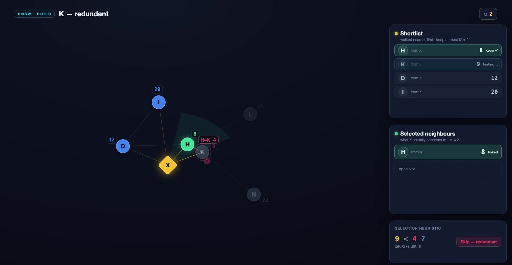
K(9) under Algorithm 4: $d(X,\mathrm{K}) = 9$ is not less than $d(\mathrm{K},\mathrm{H}) = 4$, so K(9) is skipped as redundant. Frame from Abid Saudagar, 14:46.
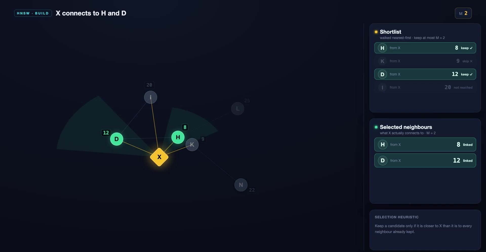
D(12) under Algorithm 4: $d(X,\mathrm{D}) = 12 < d(\mathrm{D},\mathrm{H}) = 15$, so D(12) is kept, giving X two diverse directions (H(8) and D(12)). Frame from Abid Saudagar, 15:30.Once X selects H and D, HNSW adds bidirectional edges (X ↔ H and X ↔ D). If adding the reverse link causes an existing node like H or D to exceed its layer capacity ($M_{\max0} = 2M$ on Layer 0, or $M_{\max} = M$ on upper layers), that node runs the exact same diversity heuristic on its own neighbor list to prune its least useful edge.
Why the diversity heuristic prevents disconnected islands
Zoom out to a dataset with two tight clusters separated by empty space. If every node connected only to its $M$ strictly nearest neighbors, every edge would stay inside its own cluster—forming two disconnected islands with zero bridge between them. Any query whose entry point starts in Cluster A while the true answer sits in Cluster B would be stranded forever.
With the diversity heuristic, once a node near the edge of Cluster A picks its first neighbor inside Cluster A, all other nearby nodes in Cluster A sit closer to that first neighbor than to the node itself and get skipped—forcing the remaining edge budget to reach across the gap and build a long-range bridge to Cluster B.

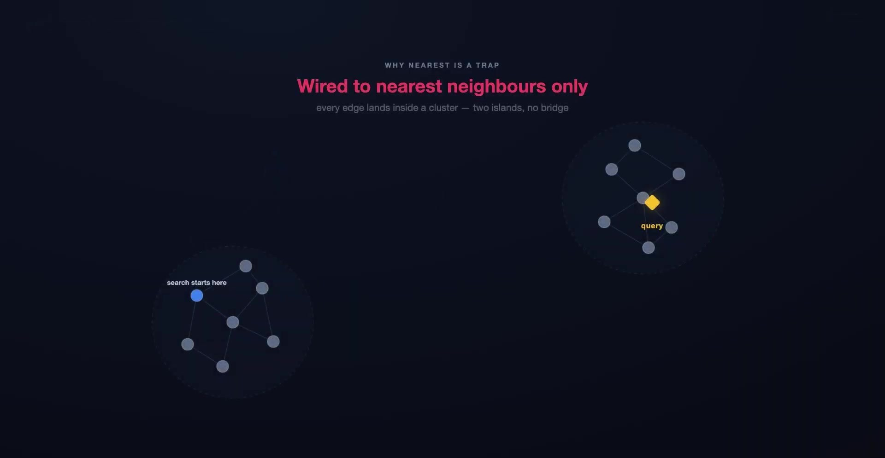

Verify the complete video trace and heuristic in Python
The self-contained Python script below encodes the video’s exact multi-layer graph, runs Phase 1 greedy descent from C(70) to E(50), runs Phase 2 on Layer 0 under both the video’s streamlined queue update and the paper’s Algorithm 2 (SEARCH-LAYER), and runs Algorithm 4 neighbor selection for node X:
import heapq
# Distances d(q, node) from the video walkthrough
DIST = {
"A": 30, "B": 45, "C": 70, "D": 12, "E": 50, "F": 35,
"G": 60, "H": 8, "I": 20, "J": 40, "K": 9, "L": 25,
"M": 55, "N": 22, "O": 60, "P": 45, "Q": 50,
}
# Upper layers for Phase 1 greedy descent (ef = 1)
LAYER_2 = {"C": ["G"], "G": ["C", "M"], "M": ["G"]}
LAYER_1 = {"M": ["G", "O", "E"], "E": ["M"], "G": ["M"], "O": ["M"]}
# Layer 0 adjacency list (17 nodes A..Q)
LAYER_0 = {
"E": ["A", "B", "C"],
"A": ["E", "D", "F", "G"],
"D": ["A", "H", "I", "J"],
"H": ["D", "K", "L", "M"],
"K": ["H", "N", "O"],
"I": ["D", "P", "Q"],
"B": ["E"], "C": ["E"], "F": ["A"], "G": ["A"],
"J": ["D"], "L": ["H"], "M": ["H"], "N": ["K"],
"O": ["K"], "P": ["I"], "Q": ["I"],
}
def greedy_descent(entry, layers):
curr = entry
path = []
for layer_num, adj in layers:
layer_steps = [curr]
while True:
best = min(adj[curr], key=lambda n: DIST[n], default=curr)
if DIST[best] < DIST[curr]:
curr = best
layer_steps.append(curr)
else:
break
path.append((layer_num, layer_steps))
return curr, path
def search_layer0(entry, ef_search=4, top_k=2):
visited = {entry}
C = [(DIST[entry], entry)] # min-heap of unvisited leads
W = [(-DIST[entry], entry)] # max-heap via negative distance
bars, popped_order = [], []
while C:
d_c, c = heapq.heappop(C)
popped_order.append(c)
bar = -W[0][0]
if len(W) == ef_search and d_c > bar:
break
for nbr in LAYER_0[c]:
if nbr not in visited:
visited.add(nbr)
d_n = DIST[nbr]
bar = -W[0][0]
if len(W) < ef_search or d_n < bar:
heapq.heappush(C, (d_n, nbr))
heapq.heappush(W, (-d_n, nbr))
if len(W) > ef_search:
heapq.heappop(W)
bars.append(-W[0][0])
w_sorted = [node for _, node in sorted((-neg_d, n) for neg_d, n in W)]
return w_sorted[:top_k], w_sorted, popped_order, bars, len(visited)
def select_neighbors_heuristic(shortlist, m, pair_dist):
selected = []
for cand in shortlist:
if len(selected) == m:
break
if all(DIST[cand] < pair_dist[(cand, r)] for r in selected):
selected.append(cand)
return selected
# 1. Verify Phase 1 descent: C(70) -> G(60) -> M(55) on L2, M(55) -> E(50) on L1
l0_entry, descent_path = greedy_descent("C", [(2, LAYER_2), (1, LAYER_1)])
assert l0_entry == "E"
assert descent_path == [(2, ["C", "G", "M"]), (1, ["M", "E"])]
# 2. Verify Phase 2 Layer 0 search trace (top_k = 2, efSearch = 4)
top2, w_final, popped, bars, seen_count = search_layer0(l0_entry, ef_search=4, top_k=2)
assert popped == ["E", "A", "D", "H", "K", "I", "F"]
assert bars == [70, 45, 30, 20, 20, 20]
assert w_final == ["H", "K", "D", "I"]
assert top2 == ["H", "K"]
assert seen_count == 17 # E plus A..Q
# 3. Verify Algorithm 4 neighbor selection for X (M = 2)
pair_dist = {("K", "H"): 4, ("D", "H"): 15, ("I", "H"): 18, ("I", "D"): 14}
chosen = select_neighbors_heuristic(w_final, m=2, pair_dist=pair_dist)
assert chosen == ["H", "D"]
print("Descent:", descent_path)
print("Layer 0 popped:", popped, "| bars:", bars, "| top-2:", top2)
print("Algorithm 4 selected neighbors for X:", chosen)Trade-offs and the parameter tuning playbook
Every HNSW knob trades recall against RAM, build time, or query latency:
- Higher
M: More bidirectional links per node → denser graph, higher recall (especially in high dimensions), but linearly more graph RAM and slower builds/queries because each visited node has more neighbors to score. - Higher
efConstruction: Deeper candidate search during insertion → higher-quality graph wiring and better recall ceiling, at the cost of slower index construction. Notice thatefConstructiondoes not increase index RAM or query latency directly. - Higher
efSearch: Wider beam at query time → higher recall, at the cost of more distance evaluations and higher query latency.
The video distills the HNSW paper’s guidance into a practical three-step tuning playbook:
- Pick
Mfrom dimensionality and recall target (default16): Most production systems start between12and48(16is a strong default; high-dimensional embeddings desiring very high recall often move to32–64). - Set
efConstructionso build-time recall on a validation sample is $\ge 0.95$ (the paper suggests near $1.0$): Build a small test index, measure recall against exact brute-force search on a validation sample, and raiseefConstructionuntil the graph has enough routing quality to support your target recall. IfefConstructionis too low, the graph is wired poorly and no amount of query-timeefSearchcan rescue missing bridges. - Plot Recall vs. Latency across
efSearchand pick the knee of the curve: SweepefSearchat query time, plot measured recall against p95/p99 latency, and pick the operating point right before latency starts shooting up for negligible recall gain.

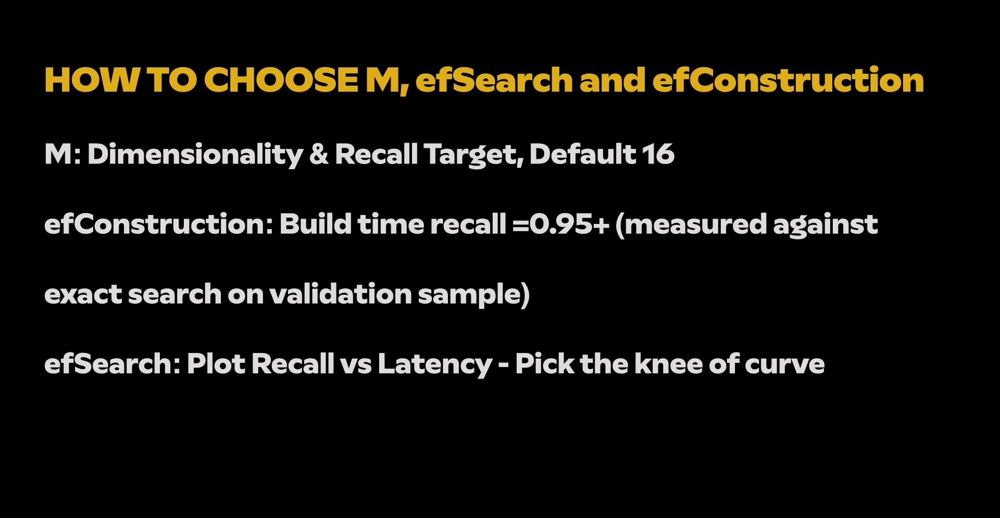
Example curve: Recall@10 vs. query latency across efSearch
To make Step 3 of the playbook concrete, suppose we index $N = 1{,}000{,}000$ vectors ($d = 768$, float32, cosine distance) with build settings M = 16 and efConstruction = 200, and query for the $\text{top\_k} = 10$ nearest neighbors while sweeping efSearch from its legal floor (efSearch = k = 10) up to 1024:

efSearch ($N = 1\text{M}$, $d = 768$, $M = 16$, $\mathrm{efConstruction} = 200$, $\text{top\_k} = 10$). The curve bends sharply at the knee (efSearch = 64–128): beyond efSearch = 128, latency quadruples for barely $+1\%$ recall before hitting the build-time graph ceiling ($\approx 99.6\%$).Every HNSW efSearch sweep exhibits three distinct operating regimes along this curve:
- Regime 1 — Steep Climb (
efSearch = 10 → 32): At the hard floorefSearch = 10($\text{efSearch} = k$), the result heap $W$ is tiny and its stopping bar tightens aggressively after the first few pops, trapping queries behind minor ridges ($\text{Recall}@10 = 78.4\%$ at $0.42\text{ ms}$). RaisingefSearchto32adds less than half a millisecond ($0.88\text{ ms}$) while jumping recall by $+13.4$ percentage points to $91.8\%$. - Regime 2 — The Knee / Production Sweet Spot (
efSearch = 64 → 128): AtefSearch = 64($\text{Recall}@10 = 96.5\%$, $1.45\text{ ms}$) andefSearch = 128($\text{Recall}@10 = 98.4\%$, $2.55\text{ ms}$), the Layer 0 beam is wide enough to route around almost all local minima while still pruning $>99.7\%$ of the corpus. This is where production RAG and semantic search services operate. - Regime 3 — Diminishing Returns & the Build-Time Graph Ceiling (
efSearch = 256 → 1024): DoublingefSearchrepeatedly from128 → 512nearly quadruples latency ($2.55\text{ ms} \to 9.40\text{ ms}$) for only $+1.1\%$ recall ($98.4\% \to 99.5\%$). Pushing toefSearch = 1024($18.2\text{ ms}$) gains just $+0.1\%$ because recall is now bottlenecked by the build-time graph ceiling ($\approx 99.6\%$): if the remaining $0.4\%$ of true neighbors were left poorly wired during construction, only rebuilding with a largerMorefConstructioncan raise the asymptote.
Example numerical benchmark sweep across efSearch on 1M 768-d vectors (M = 16, efConstruction = 200, top_k = 10).
efSearch | Avg Layer 0 Distance Evals | Recall@10 | Marginal Gain ($\Delta$ Recall) | p50 Latency | p95 Latency | Throughput (1-core QPS) | Operating Regime |
|---|---|---|---|---|---|---|---|
| 10 (min $= k$) | ~290 vectors (0.03%) | 78.4% | — (baseline) | 0.31 ms | 0.42 ms | ~2,380 QPS | Under-explored (premature stop) |
| 16 | ~430 vectors (0.04%) | 84.6% | +6.2% | 0.43 ms | 0.58 ms | ~1,720 QPS | Steep climb |
| 32 | ~740 vectors (0.07%) | 91.8% | +7.2% | 0.66 ms | 0.88 ms | ~1,135 QPS | Steep climb |
| 64 | ~1,320 vectors (0.13%) | 96.5% | +4.7% | 1.10 ms | 1.45 ms | ~690 QPS | Knee / Production Sweet Spot |
| 100 | ~1,910 vectors (0.19%) | 97.8% | +1.3% | 1.55 ms | 2.05 ms | ~485 QPS | Knee / Production Sweet Spot |
| 128 | ~2,420 vectors (0.24%) | 98.4% | +0.6% | 1.92 ms | 2.55 ms | ~392 QPS | Knee / High-Recall Sweet Spot |
| 256 | ~4,650 vectors (0.47%) | 99.2% | +0.8% | 3.65 ms | 4.85 ms | ~206 QPS | Diminishing returns |
| 512 | ~9,100 vectors (0.91%) | 99.5% | +0.3% | 7.10 ms | 9.40 ms | ~106 QPS | Heavy latency penalty |
| 1024 | ~17,800 vectors (1.78%) | 99.6% | +0.1% | 13.80 ms | 18.20 ms | ~55 QPS | Saturated at build-time ceiling |
| Exact Flat Scan | 1,000,000 vectors (100%) | 100.0% | +0.4% | 82.00 ms | 85.00 ms | ~12 QPS | Brute-force baseline ($O(Nd)$) |
Scroll horizontally to compare the columns. Keyboard: focus the table, then use the left and right arrow keys.
Time & space complexity of HNSW — and the TC gain compared to skip lists & flat NSW
HNSW is mathematically the high-dimensional proximity-graph generalization of a 1D Probabilistic Skip List (Pugh, 1990) combined with a Navigable Small World (NSW) graph (Malkov et al., 2014). Writing out the exact asymptotic complexity reveals why HNSW scales to billions of vectors and where its time-complexity (TC) gains come from:
1. Exact parameterized time & space complexity of HNSW
- Hierarchy height ($L_{\max}$): Because each vector is promoted to upper layers with probability $p = e^{-1/m_L} = 1/M$ (when $m_L = 1/\ln M$), the expected number of layers is: $$L_{\max} = \Theta(\log_M N) = \Theta\!\left(\frac{\ln N}{\ln M}\right).$$
- Phase 1 (Upper-layer greedy zoom-in, Layers $L_{\max} \dots 1$): Because the characteristic edge length on layer $\ell$ matches the inter-node spacing on layer $\ell$, greedy routing ($\mathrm{ef}=1$) takes $O(1)$ expected hops per layer before hitting a local minimum at that scale. Each hop evaluates at most $M_{\max} = M$ neighbors of dimension $d$: $$\mathcal{T}_{\text{Phase 1}} = \underbrace{O(\log_M N)}_{\text{layers}} \times \underbrace{O(1)}_{\text{hops / layer}} \times \underbrace{O(d \cdot M)}_{\text{distance work / hop}} = O\!\left(d \cdot \frac{M}{\ln M} \ln N\right).$$
- Phase 2 (Layer 0 beam search): Starting inside the query’s local basin on Layer 0, beam search expands $O(\mathrm{efSearch})$ candidates, each scoring up to $M_{\max0} = 2M$ neighbors: $$\mathcal{T}_{\text{Phase 2}} = O\!\left(d \cdot M \cdot \mathrm{efSearch}\right).$$
- Total Query Time Complexity:
$$\mathcal{T}_{\text{query}}(\text{HNSW}) = O\!\left(d \cdot M \left(\log_M N + \mathrm{efSearch}\right)\right) = \mathbf{O(d \log N)}$$(treating $M$ and $\mathrm{efSearch}$ as tuned constants with respect to corpus size $N$).
- Single Insertion & Full Index Build Time Complexity ($N$ vectors): Inserting one vector runs Phase 1 down to its assigned level $\ell$ plus beam search of width $\mathrm{efConstruction}$ on $O(1)$ expected layers:
$$\mathcal{T}_{\text{insert}} = O\!\left(d \cdot M \left(\log_M N + \mathrm{efConstruction}\right)\right), \qquad \mathcal{T}_{\text{build}}(N) = O\!\left(N \cdot d \cdot M \left(\log_M N + \mathrm{efConstruction}\right)\right) = \mathbf{O(N \log N)}.$$
- Space (RAM) Complexity: Every vector stores $d$ floats plus up to $2M$ links on Layer 0 and $M$ links on each upper layer it reaches ($\sum_{\ell=1}^{\infty} M^{-\ell} = \frac{1}{M-1}$ expected upper layers per node):
$$\mathcal{S}(\text{HNSW}) = O\!\left(N \cdot d + N \cdot \Bigl(2M + \frac{M}{M-1}\Bigr)\right) = \mathbf{O\bigl(N(d + M)\bigr)}.$$
2. Where does the time-complexity (TC) gain compared to a Skip List & Flat NSW come from?
Comparing HNSW against a classic 1D Skip List and against single-layer Flat NSW highlights three distinct complexity advantages:
- Generalizing $O(\log N)$ from 1D total order to $\mathbb{R}^d$ vector space (where 1D skip lists degrade to $O(N)$): A classic 1D Skip List achieves $O(\log N)$ search only because 1D numbers obey a total order ($x_1 < x_2 < \dots < x_N$): a single comparison eliminates everything to one side. High-dimensional vectors ($d \ge 128$) have no neighborhood-preserving 1D total order—mapping $\mathbb{R}^d$ onto a 1D skip list or space-filling curve scatters true neighbors across $O(2^d)$ intervals, degrading high-recall search back to $O(Nd)$. HNSW replaces each layer’s 1D linked list with a $d$-dimensional Relative Neighborhood Graph (Delaunay approximation), preserving $O(d \log N)$ logarithmic routing in $\mathbb{R}^d$.
- The $\Theta(\log N)$ TC gain of Skip-List layers over Single-Layer Flat NSW ($O(\log^2 N) \to O(\log N)$): In a single-layer Navigable Small World (Flat NSW) graph without skip-list layers, every node lives on the same graph and early “hub” nodes must hold long-range, medium-range, and short-range edges simultaneously. As $N$ grows, hub node degrees grow as $\Theta(M \log N)$, and every greedy hop must check all $\Theta(M \log N)$ neighbors across $\Theta(\log N)$ hops—yielding polylogarithmic query time $\mathcal{T}_{\text{query}}(\text{Flat NSW}) = O(d \cdot M \log^2 N)$ and build time $O(N \cdot d \cdot M \log^2 N)$. By introducing the Skip-List hierarchy, HNSW segregates long-range links into sparse upper layers and strictly caps the degree on every layer at $O(M)$, cutting query time by a full $\Theta(\log N)$ factor:
$$\underbrace{O(d \cdot M \log^2 N)}_{\text{Single-Layer Flat NSW}} \;\xrightarrow{\text{Skip-List Scale Separation (cap degree at } M\text{)}}\; \underbrace{O(d \cdot M \log_M N) = O(d \log N)}_{\text{HNSW }(\mathbf{\Theta(\log N)\text{ TC gain}})}.$$At $N = 10^9$ vectors ($\log_2 N \approx 30$), removing that extra $\log N$ factor eliminates $\sim 20\times\text{–}30\times$ of redundant hub distance checks during zoom-in.
- Base-$M$ height compression vs. a binary Skip List ($\log_M N$ vs. $\log_2 N$ levels): A standard binary skip list promotes nodes with probability $p = 1/2$, creating $\log_2 N$ vertical levels ($\approx 20$ levels for $N = 10^6$, $\approx 30$ levels for $N = 10^9$) of sequential pointer-chasing hops. Because each HNSW node already fans out to $M$ directions per layer (typically $M = 16\text{–}32$), HNSW sets $p = 1/M$ ($m_L = 1/\ln M$), compressing the hierarchy height by a factor of $\log_2 M$:
$$L_{\text{HNSW}} = \log_M N = \frac{\log_2 N}{\log_2 M} \qquad (\text{e.g., for } N = 10^6, M = 16: \;\log_{16}(10^6) = \mathbf{5\text{ levels}} \text{ vs. } \log_2(10^6) \approx \mathbf{20\text{ levels}}).$$Fewer vertical layers plus evaluating $M$ neighbors per node in a contiguous SIMD batch makes HNSW dramatically more CPU-cache-friendly than chasing $O(\log_2 N)$ serial pointers.
Asymptotic time and space complexity comparison: Exact Scan, 1D Skip List, Single-Layer Flat NSW, and HNSW.
| Index Structure | Metric Space | Hierarchy Levels | Max Degree / Layer | Query Time Complexity | Build Time Complexity ($N$ items) | Space Complexity | Key TC Bottleneck or Gain |
|---|---|---|---|---|---|---|---|
Exact Brute-Force (Flat) | Any $\mathbb{R}^d$ | 1 (flat array) | — | $O(N \cdot d)$ | $O(N \cdot d)$ (copy) | $O(N \cdot d)$ | Linear wall: scans 100% of corpus on every query |
| 1D Probabilistic Skip List (Pugh, 1990) | 1D total order ($\mathbb{R}^1$) | $O(\log_2 N)$ ($p = 1/2$) | $O(1)$ pointers | $O(\log_2 N)$ in 1D (degrades to $O(Nd)$ in $\mathbb{R}^d$) | $O(N \log_2 N)$ | $O(N)$ | Fast in 1D, but cannot route across $d$-dimensional neighborhoods without $2^d$ blowup |
| Single-Layer Flat NSW (Malkov et al., 2014) | General $\mathbb{R}^d$ | 1 (all scales mixed) | $\Theta(M \log N)$ at hubs | $O(d \cdot M \log^2 N)$ | $O(N \cdot d \cdot M \log^2 N)$ | $O(N(d + M \log N))$ | Polylogarithmic bottleneck: hub degree grows as $O(\log N)$ with corpus size |
| HNSW (Skip-List Hierarchy + NSW) | General $\mathbb{R}^d$ | $O(\log_M N)$ ($p = 1/M$) | Bounded $O(M)$ ($2M$ on L0) | $O\bigl(d \cdot M(\log_M N + \mathrm{efSearch})\bigr) = O(d \log N)$ | $O\bigl(N \cdot d \cdot M(\log_M N + \mathrm{efConstruction})\bigr) = O(N \log N)$ | $O\bigl(N(d + M)\bigr)$ | $\Theta(\log N)$ faster than Flat NSW by capping per-layer degree at $M$; $\log_2 M\times$ fewer levels than binary skip list |
Scroll horizontally to compare the columns. Keyboard: focus the table, then use the left and right arrow keys.
Complete HNSW parameter reference: how to set each knob and what happens at the extremes ($\to \infty$ vs. $\to 0$)
When tuning HNSW, engineers frequently ask: “How does each parameter enter the time/space complexity? What happens when I increase it? And can I push it to $\infty$ or shrink it to $0$?” The reference table below answers all of these questions for every HNSW parameter:
Complete HNSW parameter guide: complexity term, directional impact, upper limit (to infinity / N), lower limit (to 0 / 1), and how to set each parameter.
| Parameter & Complexity Term | What Happens When You Increase It ($\uparrow$)? | Can You Increase It to $\infty$ (or $N$)? | Can You Decrease It to $0$ (or $1$)? | How to Set It in Practice |
|---|---|---|---|---|
efSearch (ef / EF_RUNTIME)Query-time Layer 0 result-heap ($W$) size Default: 16–64 | Range: 32–256TC term: $\mathcal{T}_{\text{query}} += O(d \cdot M \cdot \mathrm{efSearch})$ |
Keeps the stopping bar $\max_{w \in W} d(q, w)$ looser for longer, admitting more leads into min-heap $C$. • Recall@k: Increases monotonically up to the build-time graph ceiling. • Query TC: Scales linearly as $O(d \cdot M \cdot \mathrm{efSearch})$ on Layer 0. • RAM & build TC: $O(1)$ (purely a runtime knob). |
Capped at corpus size $N$ — degrades query TC to $O(N d + N \log N)$. Because the visited set prevents scoring any vector twice, any $\mathrm{efSearch} \ge N$ behaves identically to $\mathrm{efSearch} = N$: the stopping check never fires early, so search traverses the entire connected Layer 0 graph (all $N$ vectors). However, graph traversal over $N$ nodes via pointer-chasing and heap operations is $5\times\text{–}20\times$ slower than a contiguous SIMD brute-force scan due to random CPU cache misses, and recall already saturates around $\mathrm{efSearch} \approx 256\text{–}512$. |
No — hard floor is $\mathrm{efSearch} \ge k$ (and $\ge 1$). • At $\mathrm{efSearch} = 0$, heap $W$ has capacity $0$ and cannot store even the entry point. • All engines ( hnswlib, FAISS, pgvector, Redis, Qdrant) enforce $\mathrm{efSearch} \ge k$ because $W$ must hold at least $k$ items to return top-$k$.• At the absolute minimum $\mathrm{efSearch} = 1$ (when $k = 1$), Layer 0 reduces to pure greedy hill-climbing, halting at the very first local minimum. |
Always satisfy $\mathrm{efSearch} \ge k$. Start at 64, sweep 16 → 512 on a validation query set, and pick the knee of the Recall-vs.-p95-latency curve (typically 64–128). Can be adjusted per query without rebuilding. |
MBidirectional links added per inserted node per layer Default: 16 | Range: 12–64TC/Space: $\mathcal{T} \propto d \cdot M$, $\mathcal{S} = O(N(d+M))$ |
Gives every node more outgoing edges and widens routing fan-out. • Recall ceiling: Rises significantly (especially for high-dimensional $d \ge 768$ data). • Space TC: Graph RAM grows linearly as $O(N \cdot M)$ ($\approx 8.5 \times M$ bytes/vector). • Query & build TC: Multiplies per-hop work by $O(M)$ while shrinking hierarchy height $L = \log_M N = \frac{\ln N}{\ln M}$. |
No — $M \to N$ degrades Space to $O(N^2)$, Query TC to $O(Nd)$, and Build TC to $O(N^3)$. If $M \to N$, Layer 0 becomes a dense complete graph ($N(N-1)$ edges). Index RAM explodes from gigabytes to terabytes ($O(N^2)$ integers), and expanding just the entry point on Layer 0 forces $N - 1$ distance checks (brute-force search with massive graph overhead). Even $M > 128$ almost always loses to $M = 32\text{–}64$ on QPS at equal recall. |
No — hard floor is $M \ge 2$ (practically $M \ge 4$). • At $M = 0$, zero edges exist: the index is $N$ isolated vertices and search cannot move a single hop from the entry point. • At $M = 1$, each node adds a single link, shattering the graph into disconnected trees/pairs where search dead-ends immediately. • At $M = 2\text{–}3$, high-dimensional graphs suffer from frequent disconnected components and long routing chains. |
Use M = 16 for general $d \le 768$ workloads. Raise to M = 32–48 for $d \ge 1024$ or when targeting $\text{Recall}@10 > 0.99$. Drop to M = 8–12 only under strict RAM budgets. |
M_max & M_max0Hard cap on total edges per node on upper layers ($M_{\max}$) and Layer 0 ($M_{\max0}$) Default: $M_{\max} = M$, $M_{\max0} = 2M$ TC role: Caps per-hop degree at $O(M)$ |
Allows popular “hub” nodes to retain more incoming reverse links before Algorithm 4 pruning triggers. • Recall: Improves connectivity through dense hubs on Layer 0. • RAM & scan cost: Increases the fixed adjacency-list slot allocation per node and slows down hub expansions. |
No — $M_{\max} \to \infty$ destroys HNSW’s $O(\log N)$ TC advantage over Flat NSW. If hub degree is uncapped, central hubs accumulate $\Theta(M \log N)$ or $O(N)$ reverse edges just like Flat NSW, degrading query time complexity from $O(d \cdot M \log N)$ back to $O(d \cdot M \log^2 N)$ or $O(Nd)$ and exhausting pre-allocated adjacency RAM. |
No — must satisfy $M_{\max0} \ge M$. • At $M_{\max0} = 0$, no node can store any edges. • If $M_{\max0} < M$, a newly inserted node cannot even keep the $M$ bidirectional edges it just selected, causing immediate pruning thrashing on every insertion. |
Leave at the paper’s formula: $M_{\max} = M$ on upper layers and $M_{\max0} = 2M$ on Layer 0 (configured automatically from M in almost all engines). |
efConstructionBuild-time result-heap ($W$) size while inserting each node Default: 200 | Range: 100–500TC term: $\mathcal{T}_{\text{build}} += O(N \cdot d \cdot M \cdot \mathrm{efConstruction})$ |
Widens the Layer 0 beam search used to find neighbor candidates when wiring each new vector into the graph. • Recall ceiling: Rises because Algorithm 4 selects from true nearest/diverse candidates instead of approximate local minima. • Build TC: Scales linearly as $O(N \cdot d \cdot M \cdot \mathrm{efConstruction})$. • Index RAM & query TC: Zero increase (edge count is still capped by $M$). |
Capped at $N$ — degrades Build TC from $O(N \log N)$ to $O(N^2 d)$ with zero graph gain past saturation. Once efConstruction is large enough that insertion search finds the true local neighborhood (typically 200–500), the $M$ edges chosen by Algorithm 4 stop changing. Pushing $\mathrm{efConstruction} \to N$ turns index building into an exact all-pairs $O(N^2 d)$ scan (taking days instead of minutes on 10M vectors) while producing virtually the exact same graph. |
No — hard floor is $\mathrm{efConstruction} \ge M$ (and $\ge 1$). • At $\mathrm{efConstruction} = 0$, insertion search cannot retain any candidates. • If $\mathrm{efConstruction} < M$, the candidate pool $W$ has fewer than $M$ nodes, starving new nodes of edges. • At $\mathrm{efConstruction} = 1$, each inserted vector wires only to a greedy local minimum, permanently baking disconnected islands into the index that no query-time efSearch can ever repair. |
Set $\mathrm{efConstruction} \ge 2M$ (typically 100–200 for $M = 16$, or 200–400 for $M = 32$). Increase until validation recall at build time is $\ge 0.95$. |
m_LLevel normalization multiplier in $\ell = \lfloor -\ln(U) \cdot m_L \rfloor$ Default: $1/\ln(M)$ ($\approx 0.3607$ for $M=16$) TC term: $L_{\max} = \Theta(m_L \ln N)$ |
Raises the promotion probability $e^{-1/m_L}$ of every node reaching higher layers. • Hierarchy height & upper-layer density: Layer count grows as $\Theta(m_L \ln N)$ and upper-layer node count scales by $\frac{1}{e^{1/m_L}-1}$. • RAM & Phase 1 TC: Increases upper-layer memory and greedy descent steps. |
No — $m_L \to \infty$ creates an infinite tower of duplicate layers ($L_{\max} \to \infty$). As $m_L \to \infty$, $e^{-1/m_L} \to 1$, promoting every vector to an unbounded number of layers. Space and Phase 1 descent time both diverge to $\infty$. |
Yes ($m_L = 0$ is valid!) — collapses HNSW into a single-layer flat graph ($L_{\max} = 0$). Setting $m_L = 0$ assigns $\ell = 0$ to every vector, eliminating the skip-list hierarchy so only Layer 0 exists. Without upper-layer expressways, worst-case routing hops grow from $O(\log N)$ toward $O(N^{1/d})$ (or $O(\log^2 N)$ if hub degree is unbounded). |
Keep at the theoretical optimum $m_L = 1/\ln(M)$, which minimizes expected Phase 1 greedy routing work while keeping layer overlap small. |
Algorithm 4 HeuristicRelative Neighborhood diversity pruning ($d(X,e) < d(e,r)$) & keepPrunedConnectionsDefault: ONTC term: $O(M \cdot \mathrm{efConstruction})$ per insert |
Skips redundant neighbors clustered in the same direction and forces the $M$ edge budget to span diverse angles and bridge separate clusters. keepPrunedConnections = true backfills discarded candidates if fewer than $M$ pass the test. |
Enabling extendCandidates = true (expanding neighbors-of-neighbors before pruning) increases per-insertion pruning complexity from $O(M \cdot \mathrm{efConstruction})$ to $O(M^2 \cdot \mathrm{efConstruction})$, helpful only on ultra-clustered low-dimensional manifolds. |
Turning the heuristic OFF (Algorithm 3 naive $M$-nearest) saves $O(M)$ pairwise checks during build but traps all edges inside tight local clusters, creating disconnected cluster islands where queries starting in another cluster suffer catastrophic recall failure regardless of how high efSearch is raised. |
Always keep Algorithm 4 Heuristic = ON with keepPrunedConnections = true and extendCandidates = false (default across hnswlib, FAISS, Qdrant, and pgvector). |
Scroll horizontally to compare the columns. Keyboard: focus the table, then use the left and right arrow keys.
Check your understanding
Why did Step 6 expand I(20) when the bar in W was already 20, while Step 7 stopped at F(35)?
The stopping condition is strictly greater than: $d(q, c) > \text{bar}(W)$. For I(20), $20 > 20$ is false, so I(20) is expanded in case one of its neighbors is closer than 20. For F(35), $35 > 20$ is true, proving that no remaining candidate in the min-heap $C$ can beat the current 4-node shortlist in $W$.
Why did Algorithm 4 reject K(9) even though K(9) is the second-closest node to X?
Because $d(X, \mathrm{K}) = 9$ is larger than $d(\mathrm{K}, \mathrm{H}) = 4$. Since H(8) is already connected to X and sits right next to K(9) in the same direction, adding a direct edge X ↔ K would duplicate the route through H and starve X of the cross-space link to D(12) ($d(X, \mathrm{D}) = 12 < d(\mathrm{D}, \mathrm{H}) = 15$).
Does raising efConstruction make queries slower?
No. efConstruction only controls the size of $W$ while searching for candidate neighbors during index building. Once the edges are wired (still capped by $M$ and $M_{\max}$), query speed is governed by $M$ and query-time efSearch.
Sources
- Abid Saudagar — How HNSW Works (Explained from the Original Research Paper): source video and visual trace frames used throughout this note.
- Yu. A. Malkov and D. A. Yashunin (2016), Efficient and robust approximate nearest neighbor search using Hierarchical Navigable Small World graphs: Algorithms 1, 2, 4, and 5.